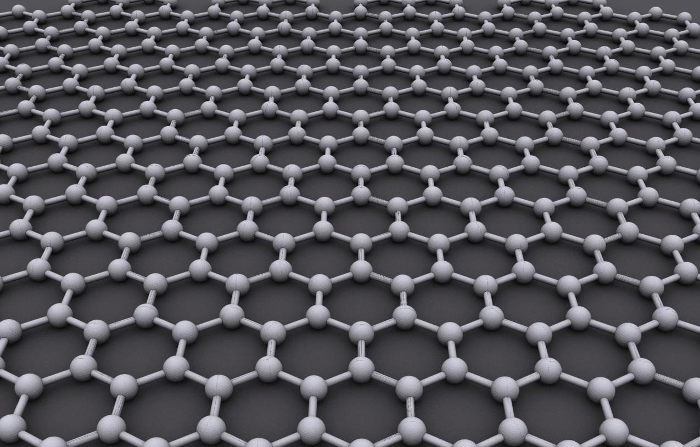
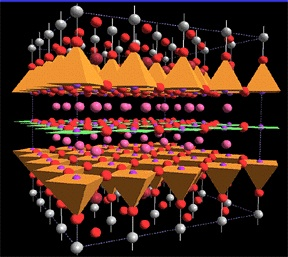

Class Meets: 10:45 am - 12:05 pm, Tuesday and Thursday, LCB 121.
Instructor: Oleg Starykh, 304 JFB, Email: starykh `at' physics.utah.edu
Office Hours: Thursday, 3 - 4 pm, or by appointment.
Teaching Assistant (grading):
Textbook: Steven H. Simon, The Oxford Solid State Basics; ISBN-13: 978-0199680771, ISBN-10: 0199680779 . (The book grew from lecture notes available in pdf format here.) A list of known errors and misprints in the printed version of the book is available here.
Course Description: this is the course on the basics of the solid state physics. It covers wide range of phenomena associated with solid state.
Main topics to be covered: classification of solids and crystal structures, electronic and vibrational properties of solids; thermal, optical, magnetic, dielectric properties of solids. More advanced topics such as graphene and topological insulators are available upon request.
Homeworks: Weekly homeworks. They are due on Tuesdays at 10:45 am (at the start of the class).
Course requirements: Prerequisits are PHYS 3740 (Intro Quantum Mech and Relativity) or CHEM 3060 (Quantum Chemistry). Also required is MATH 2250 (Linear Algebra and Differential Equations). Lecture attendance is expected.
Grading policy and exams: Grade composition: max = 300 pts = homeworks(10 best homeworks, 15 pts each) + 3 midterms(30 pts each) + final(60 pts).
No late homeworks are accepted unless there is an explicit agreement with the instructor about this; no make-up test/assignments unless for legitimate reasons such as emergency (documented), university-approved travel, etc.


<| 1 | Tue Aug 23 | review of QM | Ch.1 | hw01 | 8/30 // sol01 |
| 2 | Thu Aug 25 | review of QM and Stat Mech | Lecture 2 | ||
| 3 | Tue Aug 30 | review of QM and Stat Mech | Lecture 3 | hw02 | 9/8 // sol02 |
| 4 | Thu Sept 1 | Ch. 2, Drude's theory of the lattice | Lecture 4 | 5 | Tue Sept 6 |
| 6 | Thu Sept 8 | Ch. 3, Drude's theory of electron transport | Lecture 5 | hw03 | 9/15 // sol03 |
| 7 | Tue Sept 13 | ||||
| 8 | Thu Sept 15 | midterm 1 | solutions | ||
| 9 | Tue Sept 20 | Ch.4, Sommerfeld theory of electron gas | |||
| 10 | Thu Sept 22 | Thermodynamics of electron gas; Boltzmann eq. | |||
| 11 | Tue Sept 27 | Electric and thermal transport from Boltzmann eq. | Lecture 6 | hw04 | 10/4 // sol04 |
| 12 | Thu Sept 29 | ||||
| 13 | Tue Oct 4 | Many-electron atoms, WKB, Thomas-Fermi approximation | Chap.5-6 | hw05 | 10/20 // sol05 |
| 14 | Thu Oct 6 | Thomas-Fermi atom | Lecture 7 | ||
| Oct 9-16 | Fall Break | ||||
| 15 | Tue Oct 18 | Chemical bonding and the origin of spin exchange interaction; Chap.6,7 | Lecture 8 | ||
| 16 | Thu Oct 20 | Phonons in 1d chain; Chap.8,9 | hw06 | 10/27 // sol06 | |
| 17 | Tue Oct 25 | Quantization of 1d chain, phonons, thermodynamics | Lecture 9 | ||
| 18 | Thu Oct 27 | Diatomic chain, impurity atom; Chap.9,10 | Lecture 10 | hw07 | 11/3 // sol07 |
| 19 | Tue Nov 1 | electronic bandstructure; Chap.11, 15 | |||
| 20 | Thu Nov 3 | Bloch theorem; extended, reduced, repeated zone schemes; Ch.15 | Lecture 11 | hw08 | 11/15 // sol08 |
| 21 | Tue Nov 8 | midterm 2 | solution | ||
| 22 | Thu Nov 10 | Crystal structure, reciprocal lattice; Ch.12,13 | |||
| 23 | Tue Nov 15 | Reciprocal lattice; Ch.12,13,14 | hw09 | 11/22 // sol09 | |
| 24 | Thu Nov 17 | Wave scattering by crystals; Ch.13,14 | Lecture 12 | ||
| 25 | Tue Nov 22 | ||||
| Thu Nov 24 | Thanksgiving Break | ||||
| 26 | Tue Nov 29 | Semiconductors and graphene | hw10 | 12/6 // sol10 | |
| 27 | Thu Dec 1 | Graphene | Lecture 13 | ||
| 28 | Tue Dec 6 | Intro to topological insulators | Lecture 14; a primer on TI by Altland and Fritz | ||
| 29 | Thu Dec 8 | midterm 3; end of lectures | midterm3 | solution | |
| Fri Dec 16 | Final Exam is take-home, to be posted online here at noon on Thursday, Dec. 15. Due by noon next day, Dec.16. | final exam | solution |
Physics & Astronomy Department
Home
University of Utah Content
Disclaimer